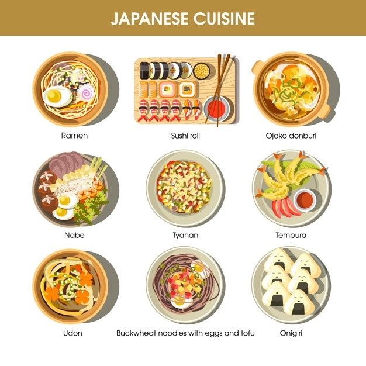
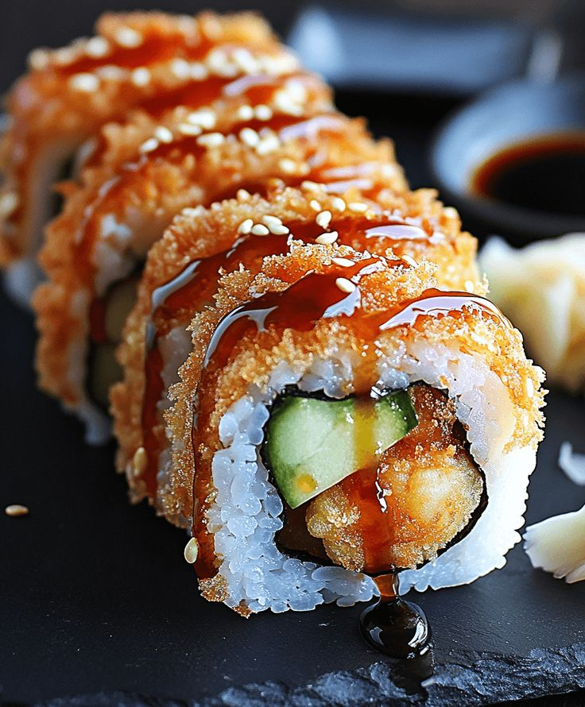
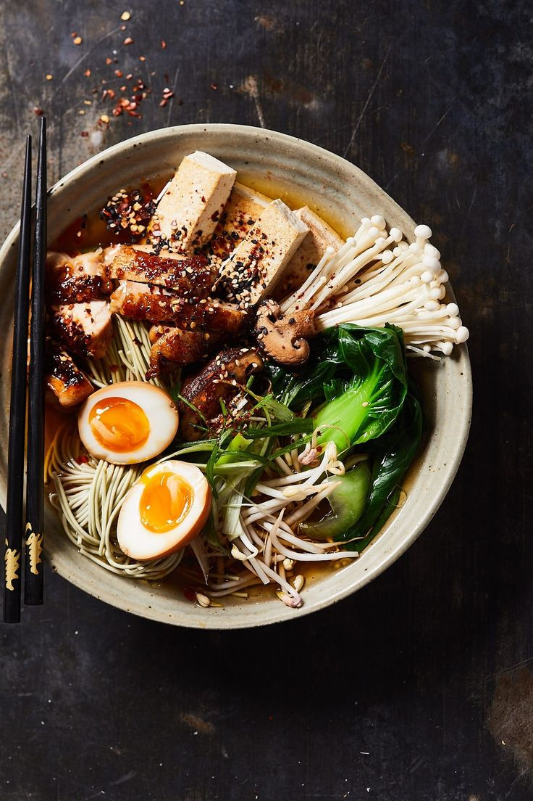
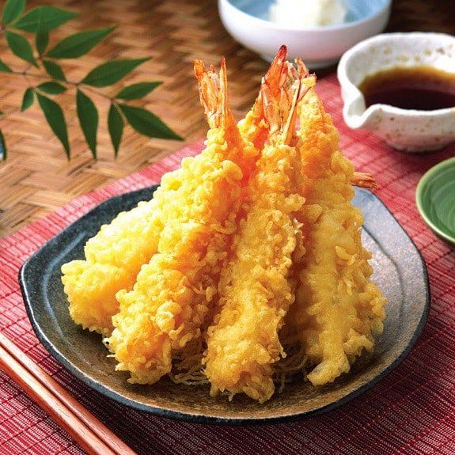

Суші, рамен, темпура – лише частина різноманітної японської кухні.
Японська їжа - це не тільки смак, а й мистецтво подачі!
| Страва | Опис | Калорії |
|---|---|---|
|  | Дізнатись більше про суші | 300 кал |
|  | Дізнатись більше про рамен | 450 кал |
|  | Дізнатись більше про темпуру | 500 кал |